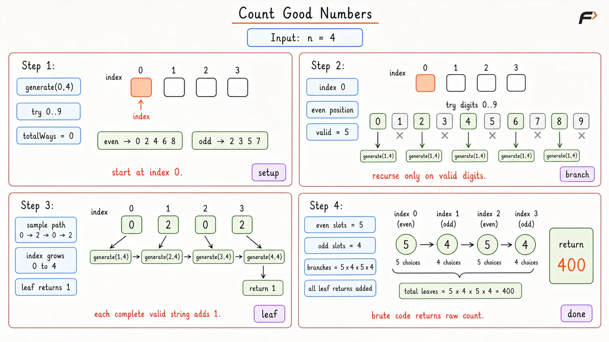
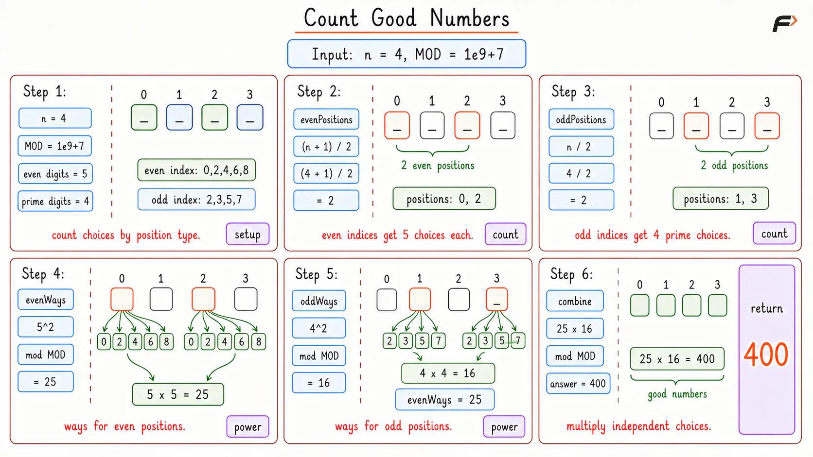

Count Good Numbers Using Modular Exponentiation
A digit string is called good if:
digits at even indices (
0,2,4, ...) are even, so they can be0,2,4,6, or8digits at odd indices (
1,3,5, ...) are prime, so they can be2,3,5, or7
Given an integer n, return the total number of good digit strings of length n. Since the answer can be very large, return it modulo 109 + 7. Leading zeros are allowed in the string.
Example 1
Input: n = 1
Output: 5
Explanation: There is only one position, and it is index 0, which is an even index. So the digit can be 0, 2, 4, 6, or 8. That gives 5 valid strings.
Example 2
Input: n = 4
Output: 400
Explanation: Indices 0 and 2 are even, so each of them has 5 choices. Indices 1 and 3 are odd, so each of them has 4 choices. So the total number of good strings is: 400
Brute Force Approach
The most direct thought is to try building every possible string of length n and check whether it is good. That idea is easy to understand, but it becomes useless very quickly. Every position can branch into several choices, so the number of generated strings grows exponentially.
The constraint n <= 1015 makes this approach completely impossible. Still, this first thought is useful because it reveals something important: the choice made at one position does not restrict the choice made at another position, as long as the index type is known.
That independence is exactly what leads to the optimal counting formula.
Algorithm
Try to build all possible digit strings of length
nbecause this will give us total possibilities.For every generated string, check each index and verify whether even indices contain even digits and odd indices contain prime digits.
Count the strings that satisfy the rule.
Return the final count.
Dry Run

Count Good Numbers Brute Dry Run
Solution
#include <bits/stdc++.h>
using namespace std;
class Solution {
private:
/*
* Checks whether a digit is valid for the given index.
*/
bool isValidDigit(int index, int digit) {
// If the index is even, only even digits are allowed here.
if (index % 2 == 0) {
return digit == 0 || digit == 2 || digit == 4 ||
digit == 6 || digit == 8;
}
// If the index is odd, only prime digits are allowed here.
return digit == 2 || digit == 3 || digit == 5 || digit == 7;
}
/*
* Tries every possible digit choice recursively
* and counts the valid good strings.
*/
long long generateStrings(int index, int n) {
// If all positions have been filled,
// one valid string has been formed.
if (index == n) {
return 1;
}
// This stores how many valid strings can be built
// from the current position onward.
long long totalWays = 0;
for (int digit = 0; digit <= 9; digit++) {
// Only continue with digits that satisfy
// the rule for the current index.
if (isValidDigit(index, digit)) {
totalWays += generateStrings(index + 1, n);
}
}
return totalWays;
}
public:
/*
* Counts good digit strings by trying all valid
* digit choices recursively.
*/
long long countGoodNumbers(int n) {
return generateStrings(0, n);
}
};
// Driver code starts
int main() {
int n = 4;
Solution sol;
cout << sol.countGoodNumbers(n) << endl;
return 0;
}Complexity Analysis
Time Complexity: O(9n), exponential as we are checking all possible digits at all index that is n.
Space Complexity: O(1) since constant extra space is used.
Optimal Approach
The key observation is that this problem does not really need string construction. Only the type of index matters.
Every even index always has the same 5 choices: 0, 2, 4, 6, 8
Every odd index always has the same 4 choices: 2, 3, 5, 7
So instead of building strings, just count how many even positions and odd positions exist. If the string length is n:
even positions =
(n + 1) / 2odd positions =
n / 2
This works because indexing starts from 0, so when n is odd, the extra position always belongs to the even-index side. Now apply the multiplication principle:
each even position contributes
5choiceseach odd position contributes
4choices
So the answer becomes: 5(number of even positions) * 4(number of odd positions)
That solves the counting part. But one more problem remains: the powers can be extremely large because n can be as big as 1015. Normal repeated multiplication would take too long. That is why fast exponentiation is needed. It reduces power calculation from linear time to logarithmic time by repeatedly squaring the base and cutting the exponent in half.
Algorithm
Count how many even-index positions exist using
(n + 1) / 2. This is done because index0is even, so an odd-length string always gives one extra even position.Count how many odd-index positions exist using
n / 2. This gives the remaining positions after the even positions are accounted for.Compute 5(even positions) % mod because every even position can take any one of
5valid even digits.Compute 4(odd positions) % mod because every odd position can take any one of
4valid prime digits.Multiply both results and again take modulo 109 + 7. This is needed because the choices for even and odd positions are independent, so the final count is their product.
Use fast exponentiation while computing powers so the exponent is reduced quickly instead of multiplying one time per position.
Dry Run

Count Good Number Optimal Dry Run
Solution
#include <bits/stdc++.h>
using namespace std;
class Solution {
private:
static const long long MOD = 1000000007;
/*
* Computes base raised to exponent under modulo
* using binary exponentiation.
*/
long long modPower(long long base, long long exponent) {
// This stores the running answer for the power calculation.
long long result = 1;
while (exponent > 0) {
// If the current bit of the exponent is 1,
// include the current base in the answer.
if (exponent % 2 == 1) {
result = (result * base) % MOD;
}
// Square the base so it represents the next power block.
base = (base * base) % MOD;
// Move to the next bit by cutting the exponent in half.
exponent /= 2;
}
return result;
}
public:
/*
* Counts how many good digit strings of length n
* can be formed under the given rules.
*/
int countGoodNumbers(long long n) {
// This stores how many positions use even-digit choices.
long long evenPositions = (n + 1) / 2;
// This stores how many positions use prime-digit choices.
long long oddPositions = n / 2;
// This stores all valid ways to fill even indices.
long long evenWays = modPower(5, evenPositions);
// This stores all valid ways to fill odd indices.
long long oddWays = modPower(4, oddPositions);
return (evenWays * oddWays) % MOD;
}
};
// Driver code starts
int main() {
long long n = 4;
Solution sol;
cout << sol.countGoodNumbers(n) << endl;
return 0;
}Complexity Analysis
Time Complexity: O(log n), because fast exponentiation halves the exponent at every step.
Space Complexity: O(1), because constant extra space is used.
Interview follow-up Questions
Even indices can contain only even digits, and the valid even digits are 0, 2, 4, 6, and 8. That gives exactly 5 choices.